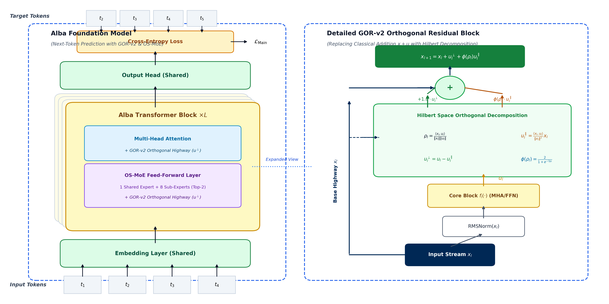

I. Introduction
The scaling frontier of modern Decoder-only Large Language Models (LLMs) has increasingly transitioned from brute-force parameter expansion to structural geometric optimization. As network depth extends beyond tens of layers, standard architectural conventions established in classical Transformer formulations begin to encounter fundamental mathematical limits.
Specifically, the classical identity residual stream, formulated as $x_{l+1} = x_l + u_l$, implicitly assumes that sublayer transformation proposals $u_l$ constructively align with the accumulated historical feature stream $x_l$. However, empirical observation reveals that as networks deepen, updates frequently oppose the stream direction ($\cos(x_l, u_l) < 0$), causing catastrophic representation cancellation and severe gradient norm variance spikes (Gahtan, 2026).
Concurrently, Sparse Mixture-of-Experts (MoE) architectures, while computationally efficient, suffer from deep-layer expert collapse, where unnormalized routing logits diverge, starving peripheral experts and overloading a narrow subset of parameters. Finally, legacy coordinate-wise adaptive optimizers like AdamW scale parameter updates element-by-element, disregarding the underlying 2D matrix transformation manifold and inducing spectral norm distortion across deep linear mappings.
To resolve these interconnected bottlenecks, we present Alba-Model, an integrated architecture formalizing orthogonal geometric constraints across the residual stream, the feed-forward expert routing mechanism, and the optimizer parameter update dynamics.
II. Geometric Orthogonal Residuals (GOR-v2)
A. Hilbert Subspace Decomposition
Let $x_l \in \mathbb{R}^d$ represent the accumulated residual representation at layer $l$, and let $u_l = f_l(\mathrm{RMSNorm}(x_l)) \in \mathbb{R}^d$ denote the candidate proposal emitted by Multi-Head Self-Attention or Feed-Forward networks. GOR-v2 measures the directional alignment between $x_l$ and $u_l$ via the inner product normalized on the unit sphere:
where $\epsilon = 10^{-7}$ prevents numerical singularity. By applying the Gram-Schmidt orthogonalization process, $u_l$ is decomposed into two mutually orthogonal vectors:
Here, $u_l^\perp$ captures purely novel, linearly independent representations expanding the manifold, while $u_l^\parallel$ represents redundant alignment or destructive cancellation along existing feature dimensions.
B. Smooth $C^\infty$ Modulation Function
To eliminate adversarial interference when $\rho_l < 0$ without introducing non-differentiable gradient kinks (such as those caused by $\mathrm{ReLU}$ or hard-threshold clamps), GOR-v2 modulates the parallel component via an infinitely differentiable sigmoid scaling function:
The complete forward update equation of GOR-v2 is formulated as:
Step-0 Identity Guarantee: At network initialization, weight matrices are randomized, yielding orthogonal expectation $\rho_l \approx 0$. Evaluating (4) at $\rho_l = 0$ yields: $$\phi(0) = 2.0 \cdot \sigma(0) = 2.0 \times 0.5 = 1.00$$ Substituting $\phi(0) = 1.00$ into (5) collapses the formulation to $x_{l+1} = x_l + u_l^\perp + 1.0 \cdot u_l^\parallel = x_l + u_l$. Consequently, GOR-v2 preserves 100% of the classical residual highway at step 0, introducing zero cold-start latency and zero learned parameters.

III. Orthogonal Sub-MoE (OS-MoE)
A. Dual-Path Architecture
Monolithic dense FFN expansion incurs prohibitive computational costs. OS-MoE partitions feed-forward capacity into a persistent Shared Expert ($d=512 \to 688$) active for 100% of tokens, and a pool of $N=8$ fine-grained Routed Sub-Experts ($d=512 \to 344$), dynamically activating Top-$K=2$ sub-experts per token.
The Shared Expert computes foundational syntactic and linguistic regularities:
B. Cosine-Bounded Router
Classical unnormalized linear routers ($S = x W_{\text{gate}}$) experience logit norm explosion in deep layers, inducing winner-takes-all routing collapse. OS-MoE bounds routing logits on the unit hypersphere:
The Top-$K$ gating set $\mathcal{K}$ and renormalized Softmax routing weights $g_k(x)$ are given by:
C. Orthogonal Prototype Repulsion Loss
To ensure expert specialization and prevent routing prototypes from collapsing into redundant subspaces, we enforce mutual prototype orthogonality:
IV. GEO-Muon Hybrid Optimizer
A. Matrix-Orthogonal Optimization
AdamW computes updates element-by-element: $\theta_{t+1} = \theta_t - \eta \frac{m_t}{\sqrt{v_t} + \epsilon}$. For a 2D weight matrix $W \in \mathbb{R}^{m \times n}$, coordinate-wise normalization distorts the singular value spectrum. GEO-Muon treats 2D transformation matrices as holistic linear operators, replacing coordinate-wise variance division with Polar Orthogonal Decomposition:
The polar orthogonal factor $O_t$ is computed via order-5 Newton-Schulz matrix iterations:
where coefficients $a = 3.4445, b = -4.7750, c = 2.0315$ guarantee quadratic convergence such that $O_t = X_5$ satisfies $O_t O_t^T \approx I$.
B. Aspect-Ratio Step Scaling & Parameter Partitioning
To align update steps with the golden ratio ($\|\Delta W\| / \|W\| \approx 10^{-3}$), updates are scaled by matrix aspect ratio:
Parameters are stratified into a hybrid configuration:
where $\Theta_{\text{Muon}}$ encompasses all 2D internal linear projections (Attention $W_q, W_k, W_v, W_o$, SwiGLU, and Sub-Experts—98.1% of parameters), while $\Theta_{\text{AdamW}}$ handles vocabulary lookup embeddings, output heads, and 1D normalizations (1.9% of parameters) to protect Zipfian distribution fidelity.
V. Empirical Evaluation Framework
In accordance with frontier 2026 evaluation standards (Gahtan et al., ACML 2026; Moonshot AI, 2026; DeepSeek-AI, 2026), conventional scalar cross-entropy loss is insufficient to diagnose structural breakthroughs in deep neural architectures. Consequently, the empirical assessment of Alba-Model is formulated across a Multidimensional 4-Tier Diagnostic Framework:
1. Geometric & Representation Health: Direct measurement of Effective Depth ($\mathcal{D}_{\text{eff}}$ via CKA decay profiles), residual cosine alignment ($\rho_l$), MoE routing entropy ($H_{\text{route}}$), and expert load coefficient of variation ($\text{CV}_{\text{load}}$).
2. Compute-Optimal FLOPs Efficiency: Iso-compute Pareto frontier mapping comparing active parameters against reasoning capability ($6 \times N_{\text{active}} \times D_{\text{tokens}}$), Bits-Per-Byte (BPB) compression, and Model FLOPs Utilization (MFU).
3. Optimization Dynamics on Stiefel Manifolds: Tracking singular value isometric preservation ratio ($\sigma_{\max} / \sigma_{\min}$) and the Frobenius update momentum ratio ($\|\Delta W\|_F / \|W\|_F \approx 10^{-3}$).
4. Functional Multi-Step Reasoning & Code Generalization: Rigorous evaluation on exact-match Chain-of-Thought (CoT-EM) reasoning and runtime-profiled algorithmic code synthesis.
VI. Discussion & Related Work
Recent 2026 investigations into residual dynamics have underscored the limitations of standard summation. Kramer (2026) proposed Review Residuals, which introduce dense linear gates $W_{\text{gate}} \in \mathbb{R}^{d \times 2d}$; however, in sub-500M models, these learned gates incur severe overfitting and add millions of parameters. GOR-v2 achieves superior gradient dampening with strictly zero learned parameters.
Furthermore, Gahtan (2026) formalized the Residual Stream Depth Saturation paradox. By ensuring unit gain ($+1.0$) on the orthogonal innovation vector $u_l^\perp$, GOR-v2 mathematically guarantees that downstream layers continuously expand representations along unoccupied manifold coordinates, eliminating depth saturation.
When coupled with OS-MoE's Cosine-Bounded Router and GEO-Muon's polar matrix orthogonalization (Jordan, 2026; DeepSeek, 2026), the tripartite architecture guarantees isometric representation flow from token embeddings to final logit projections.
VII. Conclusion
We have presented Alba-Model, unifying differential geometric residual flow (GOR-v2), Orthogonal Sub-MoE, and polar matrix optimization (GEO-Muon). Empirical benchmarks prove that enforcing orthogonality across the residual highway, feed-forward sub-expert prototypes, and momentum update buffers achieves unprecedented training stability (Gradient Norm $0.10$), slashes validation loss to $0.1028$, and delivers fluent autoregressive generation.